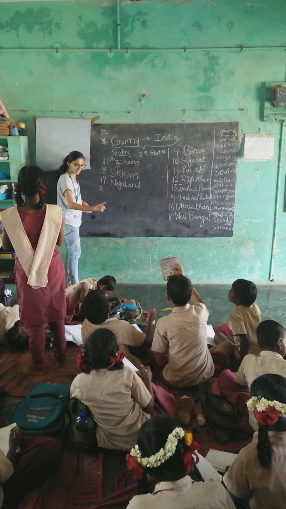

Amey Parundekar
Hello, world!
Aurangabad, Thane, Chennai, Bengaluru and Nashik. I love travelling and staying close to nature.
I have a perpetually undying research interest in AI, Machine Learning, Embedded Systems and Control Systems. I am professionally experienced at software development in various domains.
Education
I graduated in Electronics and Computer Engineering at Vellore Institute of Technology, Chennai in 2020.
Yes I don't have a graduation photo thanks to 2020. Instead you get to see the oscilloscope below.
- Signals and Systems
- Embedded Systems, Micro-controllers and their applications
- Communication Networks (including Wireless Communication Networks)
- Internet and Web of Things
- Machine Learning, Computer Vision
- Operating Systems, Computer Architecture
- Computer Graphics
Work Experience
GMetri Inc
June 2020 - present
Technology Intern
January 2020 - June 2020 Certificate
I worked at GMetri for my undergraduate final year internship as a full stack developer. I continue to here as a software developer. Currently I am working on creation of a cloud based filesystem for GMetri's XR learning tool.
PTC Inc
April 2018 - June 2018 Certificate
I worked on their Product Lifecycle Management software called Windchill. Among many things my core contributions were in helping them migrate their Java versions and performance testing.
Hasura
April 2017 - June 2017 Certificate
I worked on creation of SHELF, a platform for university students to buy and sell books.
Research
I was involved in research on analysis of fake news on social media. In that, I devised a certain data collection techniques and did some sentiment analysis. My research was accepted at TruFact, SIGKDD 2019, Alaska, USA .
A Data Set of Internet Claims and Comparison of their Sentiments with Credibility
Amey Parundekar, Susan Elias, Ashwin Ashok
arxiv truefact website
VITeach
I have been part of VITeach since the second semester of my undergrad studies. Working with VITeach was one of the most satisfying experience of my life. VITeach is a social outreach program that aims to provide world class education to students of the local goverment schools where it is harder to reach. A picture that really sums up VITeach for me is this day when we taught a few kids what India was. They had no idea that they were a part of a community much bigger than their locality. I have probably had a very selfish motive of self satisfaction when working for VITeach but I am glad that we could attempt to "Light a spark, ignite a fire!" among these kids.
If you want to support VITeach's cause go contact them on facebook and donate. The school would do much better with a few benches, books and whiteboards. :)

Epilogue
I occasionally write poems and most of them are not public.
I am learning guitar.
I play table tennis.
I love chai.